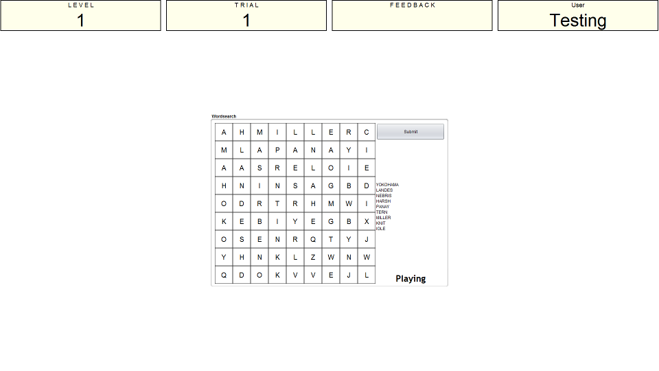
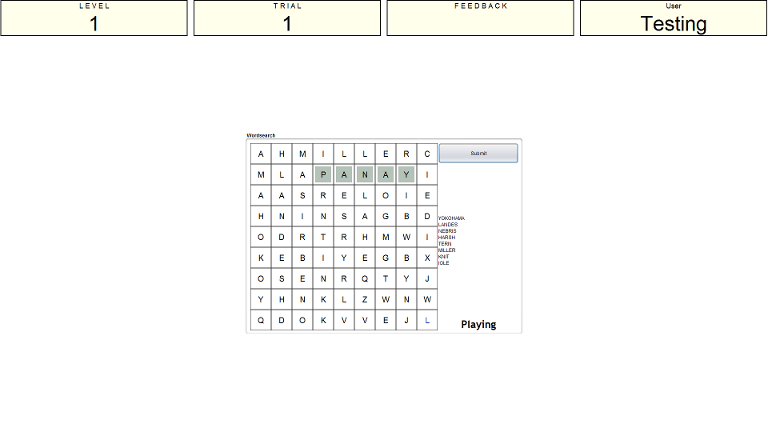

Instructions
This is a standard worsearch type task which requires you to scan a grid of letters to find certain words. The words can be horizontal, vertical, or diagonal, and they may be forwards or backwards. The screenshot below shows an example of what the wordsearch puzzles look like in this program.

Each puzzle will present you with a grid of letters and a selection of random words that can be found in the puzzle. The word list is just to the right of the puzzle itself. You input a word by finding it in the puzzle and clicking on each letter one by one. After you have clicked the letters in the sequence to make the word you press the 'submit' button. If it was a valid word then the word will stay highlighted throughout the rest of this puzzle and the word will be removed form the word list. See screenshot below for an example.

As you complete more puzzles the size of the grid will increase making the words more difficult to locate.